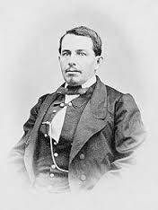
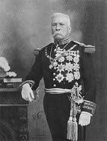
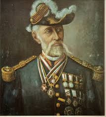

Personajes
General Ignacio Zaragoza
El General Ignacio Zaragoza hizo frente con un pequeño ejército, a las potentes fuerzas francesas de Napoleón III durante la Segunda Intervención Francesa.

GENERAL MIGUEL NEGRETE
Es considerado por algunos historiadores como el verdadero héroe de la Batalla de Puebla. El 5 de Mayo estuvo al mando de las fuerzas que defendían el Cerro de Guadalupe, recibiendo el peso del principal asalto francés.
GENERAL PORFIRIO DIAZ
Militar valiente de origen oaxaqueño, Díaz llenó su nombre de gloria con una destacada participación durante el 5 de Mayo.El 5 de mayo, el político oaxaqueño y otros militares intervinieron en la Batalla de Puebla, Díaz defendió el ala izquierda de la ciudad, y rebatió en dos ocasiones el ataque francés.
GENERAL FELIPE BERRIOZABAL
Las crónicas históricas de la Batalla de Puebla narran que el general Zaragoza hizo avanzar al general Felipe Berriozábal a paso veloz entre las rocas y situándolo entre la hondonada que divide Loreto y Guadalupe.
